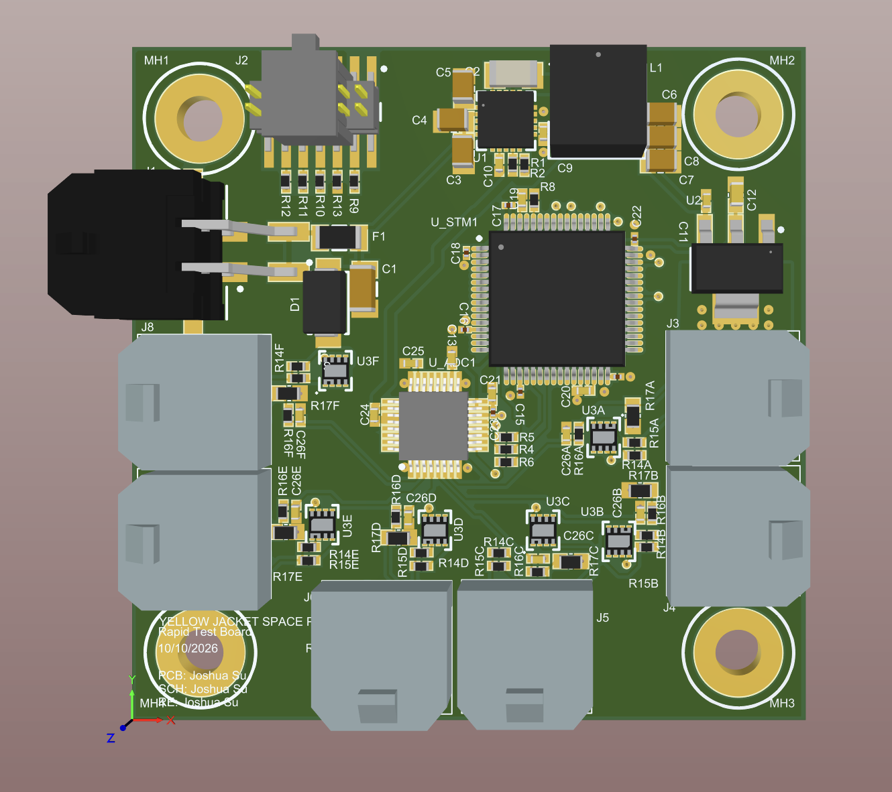
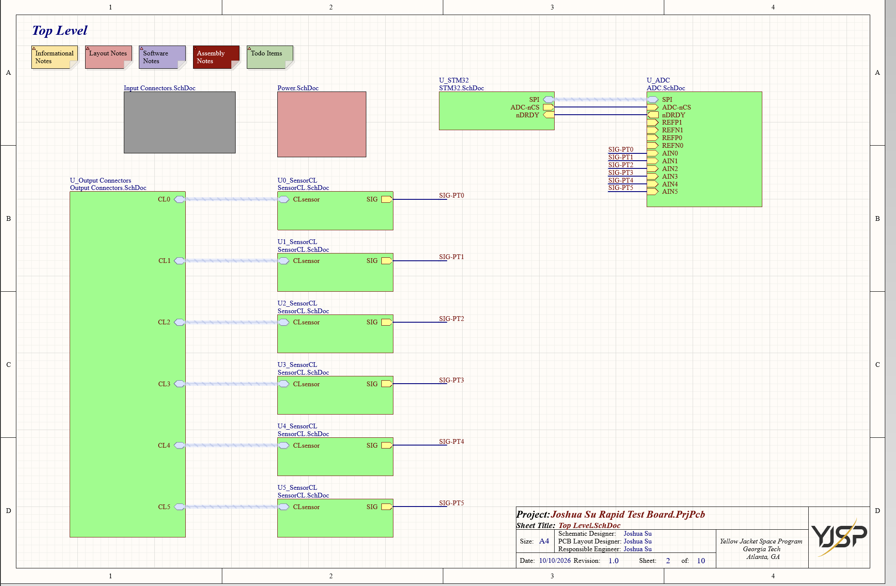
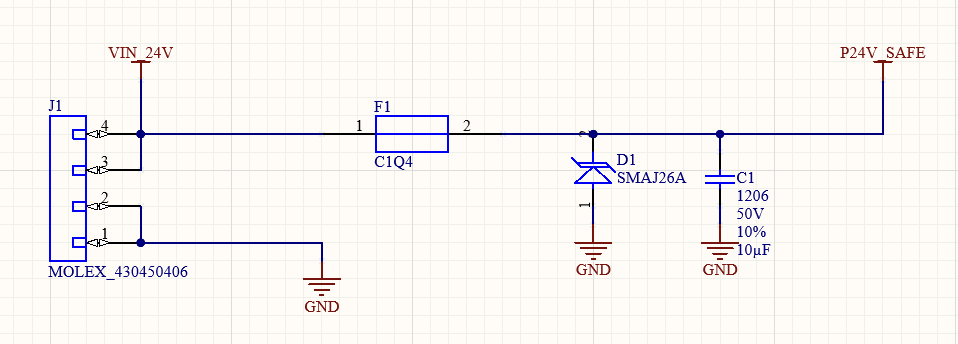
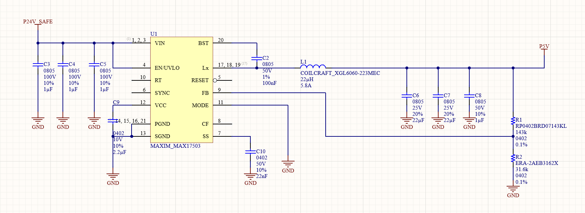
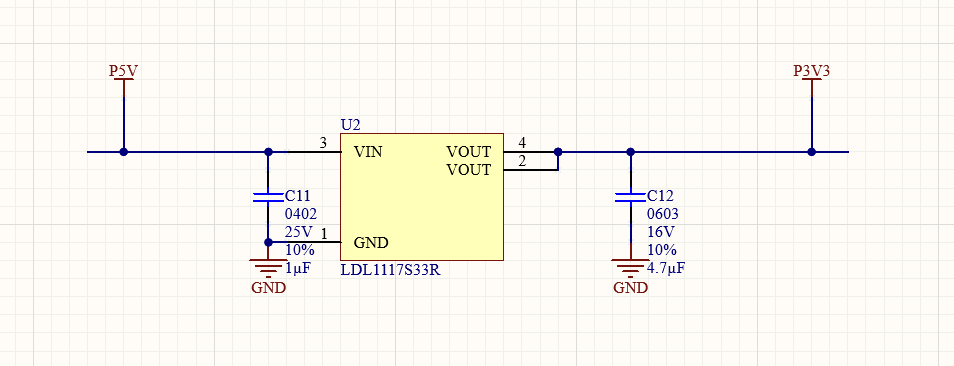
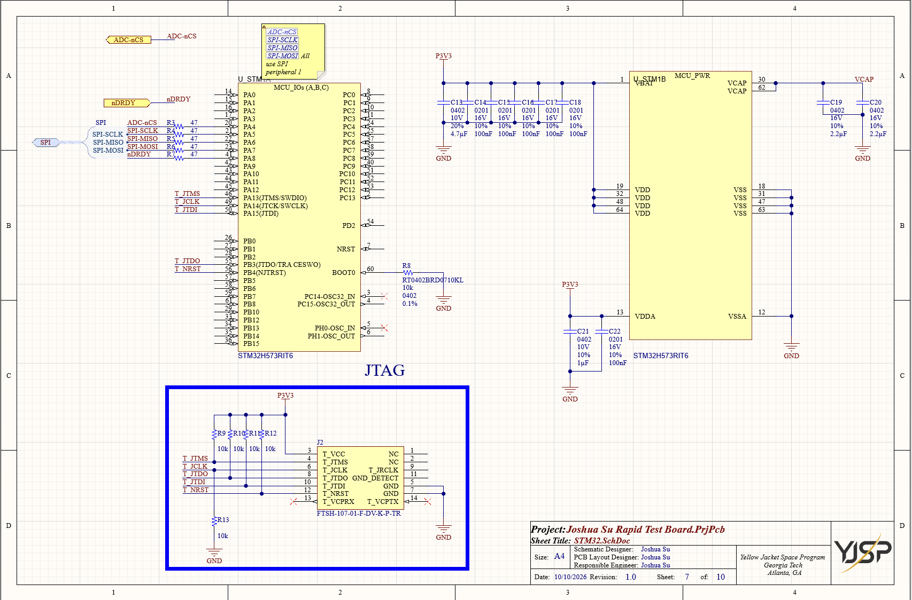
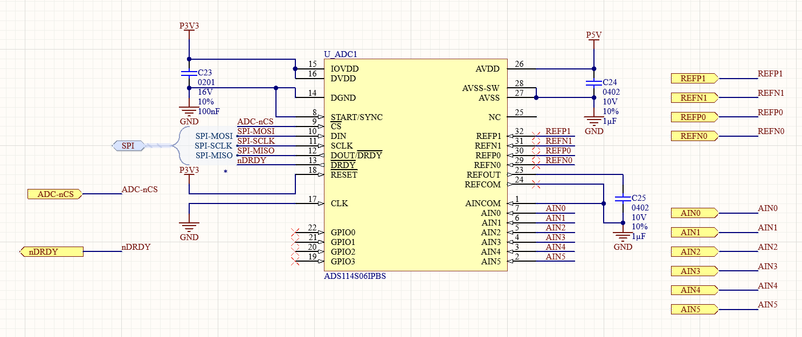
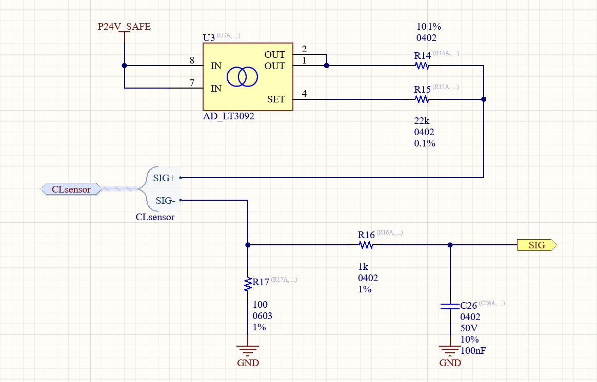
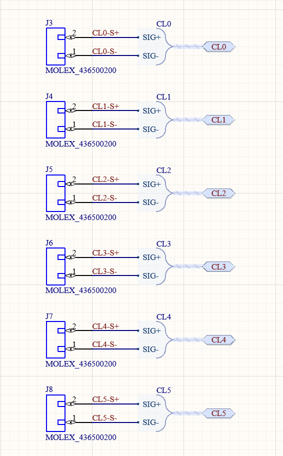
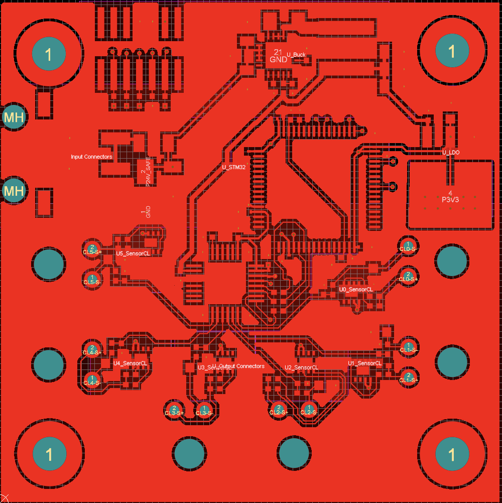

A 24 V avionics test board that powers and reads six 4–20 mA current-loop sensors, digitizes them with an external ADC, and hands the data to an STM32 over SPI.
Altium DesignerPCB DesignPower ElectronicsMixed-SignalGT Yellow Jacket Space Program

The finished board in Altium Designer. The 24 V input connector and protection sit on the left edge, the buck converter and LDO along the top, the STM32 in the centre-right, and the ADC with its six sensor channels across the lower half. The six two-pin sensor connectors (J3–J8) wrap around the bottom and sides.
Overview
Rockets are full of sensors: tank pressure, chamber pressure, line pressure, temperature and thrust. Most of the
industrial transducers used for these report their reading as a 4–20 mA current rather than a voltage,
because a current survives long, noisy cable runs far better. This board is a smaller version of the sensor electronics on
the Yellow Jacket Space Program rocket. It takes a 24 V supply, powers six current-loop sensors, measures each one
and turns the result into data a microcontroller can use.
I designed it end to end in Altium Designer, from schematic capture and component selection through current
budgeting, trace sizing, floorplanning and routing.
24 V
Protected input
6
4–20 mA sensor channels
5 V / 3.3 V
Buck + LDO rails
22 mA
Per-channel current limit
ADS114S06
16-bit, 6-input ADC
STM32H5
Microcontroller over SPI
System Architecture
The easiest way to read the board is to follow two paths. Power enters as 24 V, is protected, then stepped
down to 5 V and 3.3 V for the electronics. Data starts at each sensor, becomes a voltage in its channel
circuit, is digitized by the ADC, and is read by the STM32.
The schematic is hierarchical. Each major function lives on its own sheet, and all six sensor channels are instances of a
single reviewed channel sheet. A fix to one channel applies to all six automatically, and the top level stays readable.

Top-level schematic. The output connector sheet feeds six identical SensorCL channel sheets (U0–U5) through harnesses. Each channel produces a filtered SIG-PTx voltage that lands on one ADC input (AIN0–AIN5). The STM32 and ADC are joined by a single SPI harness plus chip-select and data-ready lines. Input protection and power each have their own sheet, and the Power sheet holds the buck and LDO as sub-sheets.
Input Protection
Power arrives on a keyed Molex 43045-0406 connector, with two contacts each for 24 V and ground. Before it reaches
anything else, it passes through three protection parts, and each one guards against a different kind of fault:
Fuse (F1), in series: opens the supply path if a short, failed part or solder bridge draws sustained excess current, before traces, connectors or wiring overheat.
TVS diode (D1, SMAJ26A), to ground: stays off at normal voltage, then clamps short overvoltage spikes such as ESD from plugging in a cable. It sits on the fused side, so a TVS that conducts for too long will blow the fuse instead of burning up.
Bulk capacitor (C1, 10 µF / 50 V): local energy storage that steadies the input against harness resistance and inductance when the load changes quickly.
The protected output is the P24V_SAFE rail, which feeds everything downstream.

Input connector and protection. VIN_24V comes in on J1, passes through fuse F1, and leaves as P24V_SAFE once TVS diode D1 and bulk capacitor C1 have been placed across it.
Power Conversion
Power is converted in two stages. Going straight from 24 V to 3.3 V with a linear regulator would burn most of
the input power as heat, so a switching buck converter does the large step first, and a small LDO handles the last one.
Buck converter: 24 V → 5 V
A Maxim MAX17503 synchronous buck converter switches the 24 V input and filters it through a 22 µH
inductor into a regulated 5 V rail. The supporting parts follow the datasheet’s reference design:
Input capacitors (3 × 1 µF, 100 V) close to VIN supply the converter’s fast switching current.
Output capacitors (2 × 22 µF plus 1 µF) smooth the inductor current into a steady DC output.
Feedback divider (143 kΩ / 31.6 kΩ, 0.1%) sets the output to 5 V against the internal 0.9 V reference.
Bootstrap capacitor (100 nF, BST to LX) drives the high-side switch, and a soft-start capacitor (22 nF) ramps the output gently at power-up to limit inrush.

Buck converter. P24V_SAFE enters on the left through the input capacitors. The switch node (LX) drives inductor L1 into the P5V output capacitors, and the R1/R2 divider closes the feedback loop.
LDO: 5 V → 3.3 V
An ST LDL1117S33R fixed-output LDO makes the 3.3 V rail for the STM32 and the ADC’s digital side. The
step is only 1.7 V, so a linear regulator is simple and quiet, and it needs just an input and an output capacitor
(1 µF and 4.7 µF) for stability.

LDO. P5V in, P3V3 out, with the datasheet-recommended input and output capacitors.
Microcontroller
The STM32H573RIT6 is the board’s brain. In a finished system its firmware would configure the ADC, read each
channel, convert currents to engineering units, flag out-of-range readings and forward the data. The hardware around it
covers what it needs to run and be programmed:
Decoupling: a 4.7 µF bulk capacitor plus a 100 nF capacitor per VDD pin, with separate filtering on the analog supply (VDDA).
VCAP: 2.2 µF capacitors on the internal core regulator’s output pins, as ST specifies.
Boot configuration: BOOT0 is pulled low through 10 kΩ, so the chip always starts from its own flash.
JTAG / SWD connector: a 14-pin debug header with pull-ups on the debug lines, for programming and on-chip debugging.
SPI series resistors: 47 Ω resistors on each SPI line slow the signal edges, reducing ringing and overshoot on the bus.

STM32 sheet. On the left, the GPIO unit with the SPI harness and JTAG nets. On the right, the power unit with its decoupling and VCAP capacitors. The JTAG connector is at the bottom.
ADC
The sensors produce analog voltages, so a Texas Instruments ADS114S06 (16-bit, six analog inputs) digitizes them.
Each sensor channel gets its own input, AIN0–AIN5, measured against AINCOM. The ADC uses its internal 2.5 V
reference, which comfortably covers the 0.4–2.2 V range the sensor channels produce. Its supplies are split:
the analog side runs from 5 V and the digital and I/O side from 3.3 V, each with its own decoupling.
The STM32 talks to the ADC over SPI (SCLK, MOSI, MISO and a chip select). The ADC also has a nDRDY
line that tells the STM32 when a new conversion is ready, so the microcontroller doesn’t have to keep polling.

ADC sheet. The SPI harness, chip select and data-ready connect on the left, and the six analog inputs on the right. REFOUT is bypassed for the internal reference, and the analog and digital supplies are decoupled separately.
4–20 mA Sensor Channels
A 4–20 mA sensor sets its current to represent the measurement. For a 0–500 psi transducer, 4 mA
means 0 psi and 20 mA means 500 psi. Starting at 4 mA instead of zero gives a live zero: a broken
or unplugged sensor reads near 0 mA, which is clearly different from a valid minimum reading.
Each of the six identical channels does three jobs:
Current-limited sensor power: an LT3092 current source feeds the sensor from 24 V. Its 22 kΩ and 10 Ω set resistors cap the loop at about 22 mA, just above the normal range. In normal operation the sensor sets the current. If the sensor or its cable shorts, the LT3092 holds the current at about 22 mA instead of letting the 24 V supply dump into the fault.
Current to voltage: the return current flows through a 100 Ω shunt to ground, so 4–20 mA becomes 0.4–2.0 V. Even at the 22 mA limit the shunt dissipates only about 49 mW.
Filtering: a 1 kΩ / 100 nF RC low-pass filter (cutoff about 1.6 kHz) removes high-frequency noise picked up by the sensor wiring before the signal reaches the ADC.
Loop current
Voltage at ADC
Meaning
~0 mA
~0 V
Disconnected, broken or unpowered sensor
4 mA
0.4 V
Minimum valid reading
20 mA
2.0 V
Maximum valid reading
~22 mA
~2.2 V
Current limit reached, likely a shorted sensor or cable
Software can therefore tell a fault apart from a real reading, as well as measure the sensor.

One sensor channel. The LT3092 sources current out to SIG+. The return on SIG− flows through the 100 Ω shunt (R17), and the R16/C26 filter produces SIG for the ADC. This one sheet is instantiated six times.

Sensor connectors. Six two-pin Molex connectors (J3–J8). Each one bundles its SIG+ and SIG− into a harness that runs to the matching channel sheet.
Current Accounting and Trace Sizing
Before routing, I worked out the worst-case current on every power rail, added a 1.5× safety margin, and sized each
trace for an acceptable voltage drop (3% of the rail) and temperature rise. Current is traced back from the loads:
The 3.3 V rail is dominated by the STM32 (~350 mA). The ADC’s draw is negligible.
An LDO’s input current equals its output current, so the 5 V rail carries the same 350 mA.
The 24 V side is sized by power, not current: 350 mA × 5 V ≈ 1.75 W out of the buck means only about 73 mA in at 24 V. The six sensor loops add up to 6 × 22 mA = 132 mA, for about 205 mA in total.
The LDO dissipates (5 − 3.3) V × 350 mA ≈ 0.6 W. At 120 °C/W that is a 72 °C rise in the part itself, so its traces were given a tighter 5 °C budget to avoid adding more heat.
Rail
Max current
With margin
Max drop
Temp rise
Min width
P24V (unfused)
Sized for 1 A
1 A
0.72 V
10 °C
15 mil
P24V_SAFE
205 mA
~310 mA
0.72 V
10 °C
10 mil
P5V
350 mA
525 mA
0.15 V
5 °C
15 mil
P3V3
350 mA
525 mA
0.10 V
10 °C
10 mil
PCB Layout
Layout started with floorplanning instead of routing. Each schematic sheet came into the PCB as an Altium
room, which made it easy to keep each functional block together: input and protection at the connector edge, power
conversion along the top, the STM32 in the middle, and the ADC with the six sensor channels in the lower half, near their
connectors. Once the floorplan made the ratsnest short and untangled, the individual parts were placed and routed.
Input protection at the edge: the fuse, TVS and bulk capacitor sit right next to J1, so very little of the board is unprotected and the TVS has a short, low-inductance path to ground.
Tight buck layout: the input capacitors, inductor and switch node are packed close to the MAX17503 to keep the high-current switching loop small.
Analog kept away from noise: the short analog sensor traces are kept away from the buck’s switching node and other high-current paths.
Decoupling at the pins: each decoupling capacitor sits right at the supply pin it serves, keeping its loop area small.
Sized power traces: every power rail is routed at or above the minimum width from the table above.
Ground pours and stitching: both outer layers carry ground pours, stitched to the internal ground planes with vias for a continuous, low-impedance return path.

2D layout. Room labels mark each functional block: Input Connectors, U_Buck, U_LDO, U_STM32, the six U0–U5 SensorCL channels and the output connectors. The red is the top-layer ground pour. Power traces run visibly wider than the signal routing, and the sensor channels fan out from the ADC to their connectors along the lower edge.